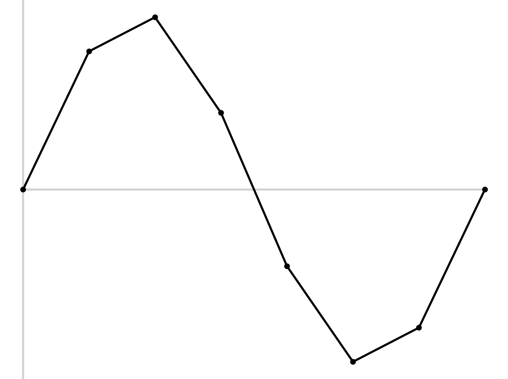
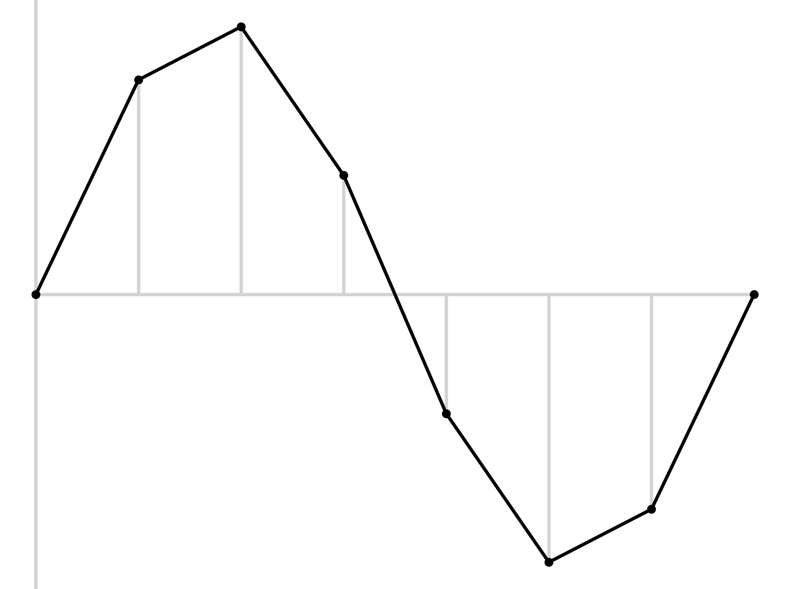
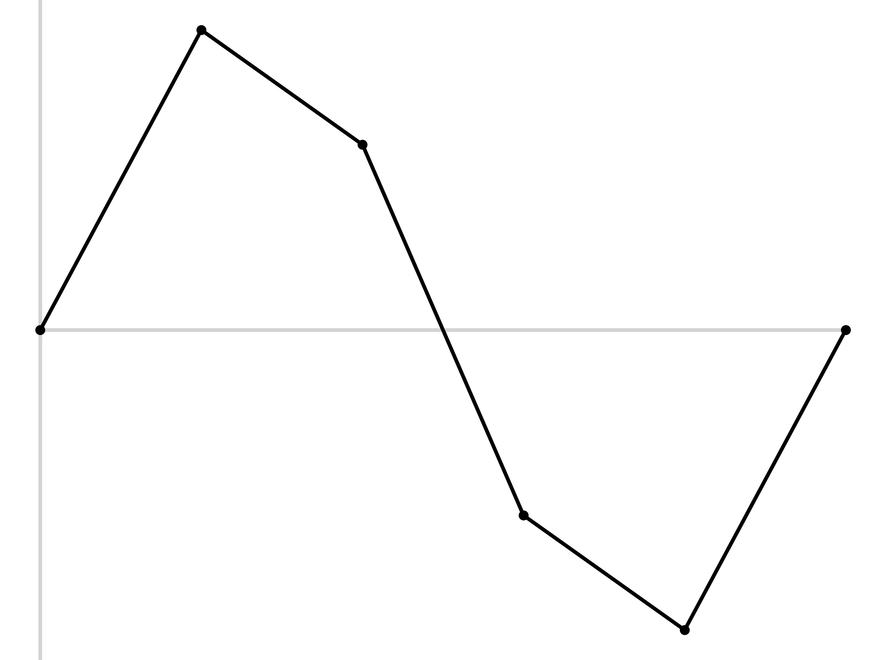

# An Introduction to Computer Audio ### Will Styler <http://savethevowels.org/talks/computeraudio.html> --- ### How do acousticians say hello? - They wave! --- ### Today's Plan - Capturing Pressure variations - Computer Audio, Sampling, and Quantization - Audio Codecs and Formats - Audio Compression - Noise Reduction --- ### Sorry if you know these things! - Some of this will surely be review for many! - All might be review for some! --- ### Sound is compression and rarefaction in a medium  --- ### Timeshifted sound is a novelty - For most of our species history, this wasn't a thing - *How do we capture and recreate the pattern of sound pressure?* --- ### Analog Recording - "Let's capture the pressure pattern in a physical medium" --- ### The Phonograph - Air pressure pushes a stylus into very soft wax cylinder  --- ### Playback from Phonographs - Put a stylus on a membrane into the groove, and let it 'trace the wave'  --- ### These recordings are ephemeral and bad - The stylus wears away the groove - The power of the air pressure limited the strength of the medium 'The Lost Chord' by Arthur Sullivan (1888) <audio controls src="phonmedia/edison_lostchord.mov"></audio> --- ### There's an inherent tradeoff - You want a soft medium for capture - ... and a hard medium for playback - Air pressure only provides so much power ---  --- ### Electric Recording fixes this! - Electrical signals are easy to amplify - ... and easier to store --- ### Microphones - A Microphone *transduces air pressure patterns into electrical patterns* - 'Give me a pattern of voltage that matches the pattern of compression and rarefaction'  --- ### Dynamic Microphones - Air pressure pushes a membrane, moving a coil of wire around a magnet, inducing voltage - Durable, but less sensitive  --- ### Condenser Microphones - Air pressure pushes one plate closer to another, producing changes in capacitance - This can then be amplified using external ('phantom' or 48v) power for output - More sensitive, but more fragile too!  --- ### Now you have sound as a voltage on an electrical line - You can amplify it, transmit it, modify it and store it - You can even recreate the air pressure movements --- ### Speakers - Dynamic microphones in reverse - Changes in voltage move a membrane attached to a coil - This 'kicks' the air in the desired pattern of compression  --- ### There are many types of speakers, some are different!  --- ## Any Questions so far? --- ### So, that's how we capture sound - ... and that's how we worked with sound for a good while! --- ### But then everything changed  --- ## Computer Audio --- ### Computers don't do waves  010001110010101000100101101010101010 --- ### Sound is analog, computers are digital - How do we deal with that? --- ### Quantization - Also known as 'digitization', 'discretization', or 'sampling' - "Let's just measure the sound a LOT and store those values" --- ### Quantization <img class="r-stretch" src="diagrams/sampling_perfectwave.png"> --- ### Quantization <img class="r-stretch" src="diagrams/sampling_sampled.png"> --- ### Quantization <img class="r-stretch" src="diagrams/sampling_withlines.png"> --- ### Quantization <img class="r-stretch" src="diagrams/sampling_justlines.png"> --- ### Analog-to-digital conversion - Sample the wave many times per second - Record the amplitude at each sample - The resulting wave will faithfully capture the signal --- ### How often do we sample? - This is called the 'Sampling Rate' - Measured in samples per second (Hz) --- ### Sampling Rate <img class="wide" src="phonmedia/sampling_quantized.jpg"> --- ### Sampling Rate <img class="r-stretch" src="diagrams/sampling_sampled.png"> --- ### Sampling Rate (low rate)  --- ### Sampling Rate (low rate)  --- ### Sampling Rate (lower rate)  --- ### Sampling Rate (lower rate) <img class="r-stretch" src="diagrams/sampling_verylow2.png"> --- ### Sampling Rate <img class="r-stretch" src="diagrams/sampling_sampled.png"> --- ### Bad sampling makes for bad waves <img class="wide" src="phonmedia/sampling_undersampled.jpg"> --- ## Nyquist Theorem The highest frequency captured by a sample signal is one half the sampling rate --- ### Sampling Rates (Shpongle - 'Nothing is something worth doing') 44,100 Hz <audio controls src="phonmedia/nothingsomething44100.wav"></audio> 22,050 Hz <audio controls src="phonmedia/nothingsomething22050.wav"></audio> 11,025 Hz <audio controls src="phonmedia/nothingsomething11025.wav"></audio> 6000 Hz <audio controls src="phonmedia/nothingsomething6000.wav"></audio> --- ### Sampling Rates (Shpongle - 'Nothing is something worth doing') 44,100 Hz <audio controls src="phonmedia/nothingsomething44100.wav"></audio> 6000 Hz <audio controls src="phonmedia/nothingsomething6000.wav"></audio> 3000 Hz <audio controls src="phonmedia/nothingsomething3000.wav"></audio> 1500 Hz <audio controls src="phonmedia/nothingsomething1500.wav"></audio> 800 Hz <audio controls src="phonmedia/nothingsomething800.wav"></audio> --- ### Different media use different sampling rates - Radio was historically less than this - CDs are at 44,100 Hz - DVDs are at 48,000 Hz - High-End Audio DVDs are at 96,000 Hz - Some people want 192,000 Hz - Likely they are dolphins --- ### Your sampling rates should be at least 44,100 - This covers the range of human hearing entirely - You can go higher, but don't go lower! --- ### ... but what are we storing at each point? - We want to store individual values for amplitude - We want to store values with enough precision to capture the wave well - 0.1 vs. 0.09 vs. 0.087 vs. 0.0866 vs. 0.08659 vs. 0.086588945372912 - ... but more precision means more numbers (which need more space to store!) - We need to find the right **bit depth** --- ### Bit Depth - How many bits of amplitude information do we store for each sample? - 4 bits gives 16 'levels' - 16 bits gives 65,563 levels - Praat records and plays at 16 bit, as do most things - 24 bits gives 16,777,216 levels - This is towards our upper limit of precision to be able to capture - **Bit Depth != Bit Rate!** --- ### Your bit depth will likely be 16 bit - If it's not spoken of, it's 16 bit - There's no reason to go higher, practically - ... and you'll run into compatibility issues - Don't go lower! --- ### This all means that 'vinyl captures more detail' people are provably wrong - Any audible audio signal can be captured digitally, c.f. the nyquist theorem - We can capture greater bit depth than we can hear - 'More detail' means 'the noise and distortion I appreciate' - **Audiophiles are generally slightly insane** --- ### This is what your 'sound card' or 'USB capture box' does - "ADC" or "AD" chips go from analog signals to digital samples - "DAC" or "DA" chips reverse the process, and create analog signals from digital samples - Every digital device that uses sound needs both - Other components provide (e.g.) level control, mixing, phantom power, different inputs - They can vary massively in quality - This is why you spend money on a decent capture card or sound card --- ### Capturing the samples into a file gives you uncompressed sound files! - WAV files are effectively large lists of amplitudes, with a sampling rate and channel info at the top - AIFF is the same idea, but Apple's own format - You can freely and *losslessly* turn WAV into AIFF and vice versa - This distinction doesn't actually matter - You should be a bit scared of any device which won't give you WAV or AIFF or FLAC - ... and if you're recording video data, check which format the audio is using! --- ### You should save your data files as WAV when possible - Disk space is ridiculously cheap - Not all software supports all filetypes - ... but they will support WAV - Format rot is a thing! --- ### ... but what if you need your files to take up less space - You're trying to store a bunch of sounds in a limited space - You're trying to save bandwidth costs when sending sound or music - You need to allow people with slow internet to talk synchronously by voice - You want to *encrypt* the signal so that others can't hear it without a key - **You want to send something smaller than large lists of samples!** --- ## Audio Codecs --- ### Codecs encode and decode signals - (This is a portmanteau of encoder-decoder) - In the audio world, it encodes the sample amplitudes into a different and more space-efficient format --- ### Codecs aren't *quite* the same as audio formats - Audio file formats are packages including data in one or more codecs - All videos include audio which is stored or compressed with a codec - It's possible to have different codecs with the same 'file type' - Occasionally, this causes video files not to open with audio, or means files won't convert or work with your software - **Generally this distinction isn't important to linguists!** --- ### There are many ways to store and stream audio - 'Uncompressed' formats - WAV, AIFF, a few others - 'Lossless' compressed codecs - FLAC, Apple Lossless - 'Lossy' compressed codecs - mp3, AAC, wma, Opus, GSM, AMR OGG --- ### Lossless Compression - 'Lossless' files contain the data to reconstruct exactly what was captured by the ADC - There are other lossless formats like FLAC, WavPack, and Apple Lossless - These save space by cleverly saving the full data stream - e.g. "4000 samples of silence here" rather than 4,000 instances of "0.000000" - Lossless compression asks "What can I do to make these files smaller while still keeping all the data?" - Lossless compression is **not a problem**, and you can convert between formats --- ## You should save your data files as WAV when possible!  --- ## Lossy File formats  --- ### Lossless vs. Lossy Compression - Lossless compression asks "What can I do to make the file smaller while keeping the same exact data?" - Lossy compression asks "What can I throw away to make the file smaller while keeping the human from noticing?" - Lossy compression *is tuned to human perception*! --- ### Lossy codecs are everywhere - mp3 is the most well known lossy codec - AAC is Apple's version - Your cell phone uses EVS, EVRC, AMR, or GSM - This one of the reasons old phones need to be changed - It's also why hold music sounds like garbage - Zoom uses the Opus codec - Free and open format, hooray! --- ### Lossy Compression throws away information strategically - Using things like Discrete Cosine Transform and LPC - This is the same LPC that finds formants in Praat! - Also uses psychoacoustic knowledge - "The human won't be able to hear this part anyways" - "Let's throw away or simplify the stuff that doesn't matter as much to the human!" --- ### It's a lot like image compression! --- <img class="wide" src="phonmedia/compression1.jpg"> --- <img class="wide" src="phonmedia/compression2.jpg"> --- --- <img class="wide" src="phonmedia/compression4.jpg"> --- --- <img class="wide" src="phonmedia/compression6.jpg"> --- <img class="wide" src="phonmedia/compression7.jpg"> --- ### Here's what it looks like when you make it lossless again --- <img class="wide" src="phonmedia/compression7.jpg"> --- ### You can choose how much to compress the sounds! - The *Bitrate* dictates how many bits are required to capture a second of audio - The unit is 'kbps', Kilobits per second - 'Variable Bitrate' (VBR) is the same idea, but adapts well to varied complexity - Lower bitrate means more compression, but more data loss - This is independent of bit depth! --- ### Sound Compression (Again, Shpongle 'Nothing is something worth doing') Uncompressed WAV <audio controls src="phonmedia/nothingsomething.wav"></audio> 320kbps mp3 <audio controls src="phonmedia/nothingsomething320kbps.mp3"></audio> 192kbps mp3 <audio controls src="phonmedia/nothingsomething192kbps.mp3"></audio> 128kbps mp3 <audio controls src="phonmedia/nothingsomething128kbps.mp3"></audio> --- ### Sound Compression (Again, Shpongle 'Nothing is something worth doing') Uncompressed WAV <audio controls src="phonmedia/nothingsomething.wav"></audio> 64kbps mp3 <audio controls src="phonmedia/nothingsomething64kbps.mp3"></audio> 48kbps mp3 <audio controls src="phonmedia/nothingsomething48kbps.mp3"></audio> 32kbps mp3 <audio controls src="phonmedia/nothingsomething32kbps.mp3"></audio> 8kbps mp3 <audio controls src="phonmedia/nothingsomething8kbps.mp3"></audio> --- <video class="r-stretch" controls src="video/bitrat.mp4"></video> Originall from <https://www.youtube.com/watch?v=wBnevSbdb7g> --- ### Lossy compression of audio throws away data! - Compression is irreversible - Loss that you can't hear can still affect measurements - Some measurements more than others - Lower bitrates will have stronger effects, but just don't - Some codecs purposefully use and remove linguistic data - LPC is used for compression *and* measurement --- ### Lossy compression makes decisions! - These codecs were tuned for a data type and language - [mp3 was developed for Suzanne Vega's "Tom's Diner"](https://observer.com/2008/09/suzanne-vega-is-the-mother-of-the-mp3/) - Opus is meant for speech and makes decisions based on contributors' languages - **Saving or collecting your data with compression changes it irrecoverably!** --- ### An aside: FILE compression is lossless - There is no harm in putting a bunch of WAV files into a zip file - Don't worry if your backup service talks about compression - If the file extension at the end doesn't change, you don't care --- ## 'Noise Reduction' --- ### The World is Noisy - Non-speech noise - Room echo and feedback - Typing and mouse clicks - Background clatter - **Zoom (et al) want to send your voice, not the noise!** --- ### 'Noise Reduction' Algorithms - Discord, Zoom, Skype, and phones use speech tuned 'noise reduction' methods - Can be as simple as multiple mics allowing subtraction of background noise - These are increasingly neural-network-based filters - 'Noise Reduction' algorithms are usually trained on language data - They can adversely affect classes of phones found in languages outside of the training data - "That sound isn't found in the language I learned about, so it's noise!" - Zoom doesn't care for ejectives! --- ### Get a local recording alongside videoconferencing - ... but also record both streams via the conferencing app, to deal with possible alignment issues --- ## Summary --- ### Key takeaways - Sampling sound is necessary to put it into computers - 16-bit bit depth and 44,100 Hz Sampling rate is a good idea - Record and save your data losslessly, ideally as .wav files - Lossy, compressed audio will negatively affect quality and measurement - Always record locally, losslessly, if doing remote fieldwork --- ### Friends don't let friends use lossy codecs in science - No. - Do not. - Abso-[infix]-lutely not.